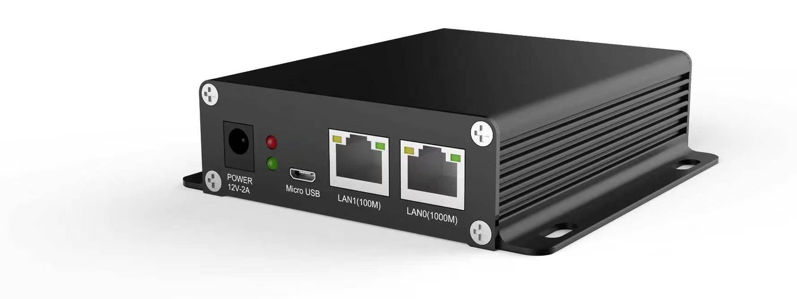

◍
设备状态
振动与声学数据本地采集，趋势摘要和异常说明用人话写给检修班组，不用他们读频谱图。
边缘智能 · 数据不出厂
一台独立设备，本地运行 270 亿参数语言模型和内嵌 OpenClaw 智能体运行时。四路会话并发、合计 40+ token/s、平均功耗约 58 W——不需要云账号，数据不离开厂内网络。

厂里的数据——P&ID 图、检修记录、电表读数、运行日志、拍下的损坏轴承照片——恰恰是安全评审不肯放出门的那批数据。一个必须联网才能回答"这台泵什么型号"的助手，最终不会被部署。
这台设备在本地回答。模型、文档、对话记录、工具调用结果，全部留在厂内网络里。没有按 token 计费，也不依赖某家厂商是否还在经营、接口是否还开着。
实测，不是估算。本页数据取自我们的参考机：四路并发生成、每路 8K 上下文，单路 10.4~10.9 token/s，NPU 占用爬到 99%，最高温度 52 ℃，内存 15.6 GB 中仅用约 1.5 GB。
配置
实测性能
27B 模型，W4A16 量化，每路 8K 上下文，四路同时生成。
| 指标 | 实测 | 说明 |
|---|---|---|
| 首字延迟 | 0.9~2.6 s | 四路并行时各路数值 |
| 单路解码速度 | 10.4~10.9 token/s | 全程稳定 |
| 合计吞吐 | 40+ token/s | 四路合计 |
| NPU 占用 | 83 → 99% | 四路都跑起来后打满 |
| 内存占用 | 1.2~1.6 GB / 15.6 GB | 为更长上下文留有余量 |
| 温度 | 32~52 ℃ | 主机 32~41 ℃，加速卡 38~52 ℃ |
| 长上下文模式 | 32K/路，2 路并行 | 32K 时单卡约 6.5 GB |
单路独占时速度高于 10 token/s；上表是四路共享硬件时的单路速率。上下文长度与并发数此消彼长，按你的业务形态配置。
工业场景
振动与声学数据本地采集，趋势摘要和异常说明用人话写给检修班组，不用他们读频谱图。
电表数据汇总，按产出计算单耗，周报在开会前就写好。
抽采与通风数据对照限值汇总，异常被标出来，而不是埋在表格里。
手册、图纸、历史工单用自然语言可查——包括铭牌照片和损坏部位照片。
交接班记录、生产小结、事件初稿，用厂里已有的数据生成。
选型核算、泵参数计算、报价草稿在现场就能出，不需要连回总部。
交付时已完成配置：模型装好、智能体运行时装好。上线只是接一根网线、建一个账号，不是一个软件项目。
它不替代厂级历史站、DCS 或安全系统。它读、总结、起草；不闭合控制回路，也不接保护逻辑。
它也不是无限能力的模型。边缘芯片上的 27B 是工程与报告场景里称职的助手，不是顶尖模型，我们不会把它说成顶尖模型。它的价值在于：跑在这里、用你的数据、成本固定、不依赖网络。
整机基于瑞芯微标准边缘产品系列——RK3588 主机加 RK1828 加速模块，这些芯片任何集成商都买得到。硬件本身不是产品。
我们交付的是硬件之上的全部：按工况选型并量化的模型、OpenClaw 智能体运行时、文档索引、工具对接、提示词与护栏——让它像一个现场工程师那样回答，而不是一个聊天机器人；外加出问题时接电话的人。
同一个盒子，你的品牌。面向经销商与系统集成商，我们按配置完成并测试后出货，铭牌、开机画面与售后联系方式用你的。你在你的市场卖，我们保持运行时与知识库更新。
首批出口市场是东盟及东南亚国家——那里的工厂往往设备齐全、电表也齐，但缺带宽、缺预算，也过不了云端 AI 服务的数据合规。一台 58 W、不联网、能说当地语言的机器，正好落在这种现场。
告诉我你要它读哪些文件、回答哪些问题。我们就在你的文件上、断网演示。